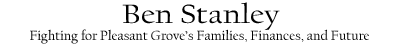

Ben Stanley offers visionary leadership and bold initiatives to improve life in Pleasant Grove without passing the burdens on to the residents. Solutions to challenges we face require innovative thinking and building businesses within the city. Ben has proposed a number of ideas to explore further with the City Council, and that he will fearlessly advance so long as they can be implemented in pragmatic ways that promise a return on investment for the city.
Several have inquired about Ben's positions on key issues in this election. Here are some of his own words:
Public Safety Buildings: I have been through the police department's Citizen Academy and consider the fire and police chief friends. Our first responders are remarkably well trained and professional, I have great supporters in both departments, and I know first-hand of the legitimate seismic and safety needs in both buildings. But I also know of the legitimate needs in homes all across Pleasant Grove: needs that have been deferred indefinitely because nearly every conceivable category of utility and impact fees and other taxes have seen significant increases in the last few years.
I led the charge from the beginning for letting the people decide this issue, and putting the desired new public safety buildings on the ballot this November as a General Obligation bond proposal. My primary argument was that doing so would cause the tax increase, if approved by the voters, to sunset and go away when the buildings were paid off. Also, it would save roughly $2 million in interest over the life of the loan and allow the people to decide and evaluate the competing needs: those at the fire and police stations, needs for rebuilt roads, and financial needs in our own homes and families. We can weigh the concern over other debt levels in the city. I have faith in the people, and believe taxing and spending proposals of this magnitude should be decided by the many rather than the few. One by one the other candidates for City Council embraced that proposal, and eventually the current City Council voted unanimously to proceed by my recommendation.
Now you have the chance to study the issues and vote for yourself, evaluating whether the city and a special Citizen Committee I also proposed have done sufficient exploration of all the costs and alternatives, including questions of timing, location, and scope.
My campaign is holding regular "Ask Ben Anything" events around the city for you to inquire if you have questions about how the public safety building proposals are evolving thanks to the input of that Citizen Committee.
Economic Development: I have also been on the forefront advocating smart solutions to the composting activities of the Timpanogos Special Services District ("TSSD"), including quantifying the economic damages from TSSD's violations of express conditions in its operating permit, and putting appropriate political pressures on the organization to require compliance with the law without additional expense to the residents.
Eliminating odors is just one piece of the puzzle, and I have also fought for private-public partnerships, proactivity on the part of our Council and city staff attracting technology companies and destination retail, commercial, and fine dining, and inviting volunteers (local leaders empowered as ambassadors to businesses on behalf of the city) to assist in courting great companies that will broaden our revenue base and lighten the burdens that the city has been compounding on the backs of the residents. I would like to see us market Pleasant Grove's natural beauty and unique culture and heritage as a place people can discover and enjoy, bringing their disposable income into our shops and restaurants.
Business growth will solve many of our challenges in the most responsible way possible. I will not give away the farm, but I will also not sit idly by while the farm remains fallow for decades. I am willing to support carefully drafted incentives with strictly enforced conditions to protect our interests and address our challenges while making our city more attractive to the destination businesses that compliment our culture and will meet our financial needs. I take a personal interest in making sure we get the benefit of the bargain, as too often as a city we have failed to do so, and let developers out of the commercial development portions of their agreements, breaking promises to the residents and letting projects fall years behind schedule.
Debt and Taxes: I wonder how many people realize that the city borrowed several million dollars earlier this year to buy a pipe plant for a future detention pond and cemetery. I wonder how many know which impact fees have been increased in the last few years, that franchise taxes on their utilities have been increased by the city a few months ago, and that water rates and storm drain rates and almost every category of potential tax has been increased or proposed for increase in the last few years.
We need responsible, practical, careful, and cost-conscious Council members who are maximizing the results of every investment and protecting the interests of the residents.
- Roads: the residents of Pleasant Grove have spoken time and again, in emails to me, in surveys by the city, and in daily conversations, about the need to address the condition of our roads and the damages that can result from neglect in proper infrastructural funding. Roads are regularly placed much higher on the priority lists of the residents than they seem to be by the city leadership. Rebuilding roads is widely considered one of the most pressing needs facing our city, and reallocating to dedicate more resources to maintenance, repair, and rebuilding will be a top priority for me on the City Council.
We have a vision of Pleasant Grove leading the Valley, and we hope you will join us, share your own proposals for Ben to present on behalf of the residents as he serves on the Council, and make your voices heard.
